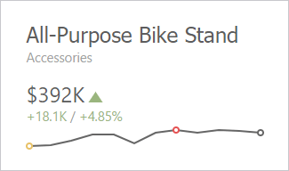
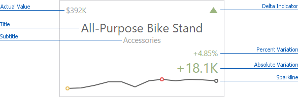

Layout
The Card dashboard item allows you to manage the position and visibility of elements displayed on cards. These elements include actual and target values, a delta indicator and corresponding delta values, a sparkline, etc.
To manage the position and visibility of card elements, choose a predefined layout template and customize its settings.
Available Layout Templates
The table below contains information about the available layout templates:
| Layout Type | Example | Description |
|---|---|---|
| Stretched |  |
The Stretched layout template arranges card elements so that they occupy an entire card area. |
| Centered |  | The Centered layout template is used to center card elements so that they occupy a specified width/height. |
| Compact |  |
The Compact layout template is used to arrange card elements so that they occupy the minimum area. |
| Lightweight | The Lightweight layout template displays the minimum set of elements within a card. |
For all layout types, you can change the visibility of its elements, or you can specify the display value type for data-bound elements. To learn more, see the Change Layout paragraph below.
Default Layout
The Card dashboard item uses the Stretched layout template that arranges card visual elements in the following way by default:

To learn more about the available value types and visual elements, see Change Layout.
Note
Delta Indicator and delta values (such as Percent Variation or Absolute Variation) are colored depending on delta settings. To learn how to manage delta settings, see Delta.
Change Layout
To change a card's layout in the Web Dashboard's UI, invoke the Binding menu, click the required data item in the Cards section and go to Cards Layout in the data item's menu.
Select the required layout type and click the Edit button (the  icon) to change its settings. The following settings are available:
icon) to change its settings. The following settings are available:
- Min width - Specifies the minimum width of the card content.
- Max width - Allows you to specify the maximum width of the card content. Select the Auto option to determine the maximum width automatically or switch to Custom and specify the required width manually.
You can show/hide the following values and visual elements within the card:
| Value | Description | Example |
|---|---|---|
| Title | Displays values of the last (bottommost) dimension placed in the Series section. | Microsoft Office Keyboard |
| Subtitle | Displays combined values of all dimensions except the last (bottommost) dimension. | Technology - Computer Peripherals |
| Absolute Variation | An absolute difference between the actual and target value (see Delta). | +18.1K |
| Actual Value | A summary value for a measure placed in the Actual placeholder. | $392K |
| Card Name | A card name. | Revenue vs. Target |
| Percent of Target | A percent of a target value (see Delta). | 104.85 % |
| Percent Variation | A percent difference between the actual and target value (see Delta). | 4.85 % |
| Target Value | A summary value for a measure placed in the Target placeholder. | $374K |
| Dimension {Name} | Allows you to display values of a specific dimension placed in the Series section. | Technology |
| Element | Description | Example |
| Delta Indicator | Indicates whether the actual value is less or greater than the target value (see Delta). |  |
| Sparkline | Visualizes the variation of actual or target values. To learn more, see Sparkline. |  |
Use the Apply to All Cards button to propagate the specified layout settings to all cards corresponding to Actual-Target pairs. The Reset button resets all setting to their default values.